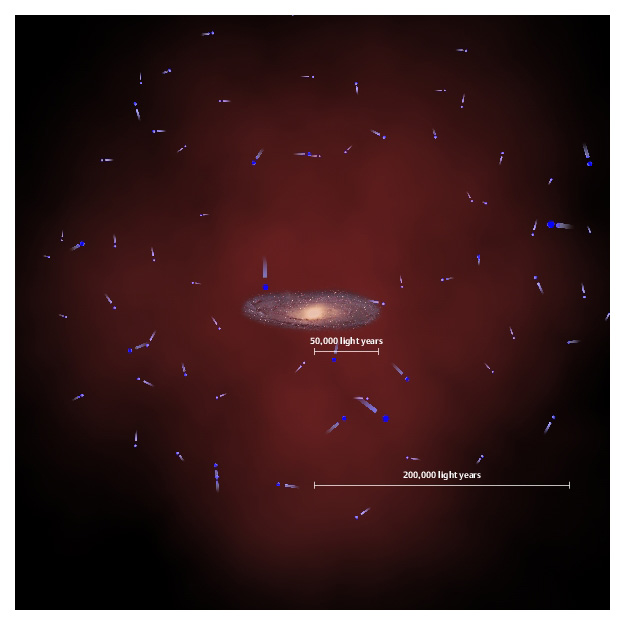

May 27, 2008
New measurements reveal slimmer Milky Way

Researchers from the Sloan Digital Sky Survey (SDSS-II) have used the motions of distant stars to measure the mass of the Milky Way galaxy.
Our sun lies about 25,000 light years from the center of the galaxy, roughly halfway out in the galactic disk. The new mass determination is based on the measured motions of 2,400 "blue horizontal branch" stars in the extended stellar halo that surrounds the disk. These measurements reach distances of nearly 200,000 light years from the galactic center, roughly the edge of the region illustrated above.
The visible, stellar part of our Milky Way in the middle is embedded into its much more massive and more extended dark matter halo, indicated in dim red. The 'blue horizontal branch stars' that were found and measured in the SDSS-II study, are orbiting our Milky Way at large distances.
From their speeds the researchers were able to estimate much better the mass of the Milky Way's dark matter halo, and found it to be much "slimmer" than thought before.
High-resolution pdf available at ftp://ftp.mpia.de/pub/rix/SDSS-BHB-HaloStars-300dpi.pdf
(Credit - SDSS Collaboration, Axel Quetz, Max Planck Institute for Astrophysics, Heidelberg)